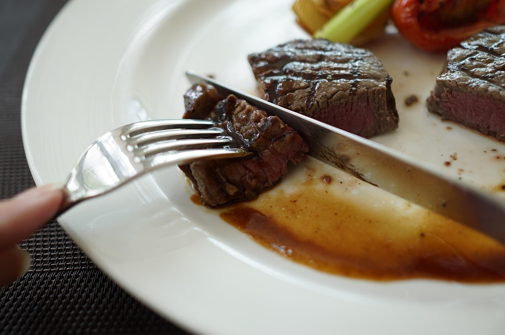

Chateaubriand recipe

Ingredients
Original recipe (1X) yields 2 servings
- 2 (8 ounce) fillets beef tenderloin filet, 1 1/2 inch thick
- 2 tablespoons vegetable oil
- freshly ground black pepper to taste
- 2 tablespoons butter
Directions
- Rub the beef with the vegetable oil and season with freshly ground black pepper. Let the beef rest at room temperature for 1 hour.
- Heat a large, heavy skillet over medium-high heat. Quickly sear the meat about 5 seconds on each side, then remove from skillet. Melt and brown the butter in the skillet. Return the meat to the skillet, and fry 4 to 5 minutes on each side. The outside of the meat should be browned and crisp. Remove from the skillet and let stand for about 5 minutes for the juices to settle.
Back to frontpage